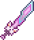
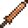

Мяумур
Характеристики
Тип Оружие Меч
Урон 200 
Скорость 14 (Очень быстрая)
Атак/сек 4.3
Крит. шанс 4%
Отбрасывание 6.5 (Сильное)
Редкость Красная
Продажа 20

Лучшая модификация Легендарный
Кол-во исследований 1 исследование
Мяумур (Meowmere) — меч, добавленный в версии 1.3. С шансом в 11,11% может выпасть с Лунного лорда.
Меч стреляет быстрыми снарядами в виде голов котиков, которые отскакивают от блоков и пробивают 5 целей. Снаряды подвержены гравитации, они оставляют после себя радужный след и мяукают при отскакивании. Снаряд отскакивает 4 раза и на пятый исчезает. Является вторым по силе мечом в игре. Очень полезен в закрытых помещениях, например в данже и пещерах.
Разработчик игры Redigit, перед выходом версии 1.3 заявил, что будет меч со снарядами мяукающих котов. Игроки усмехнулись, но меч всё же был добавлен в игру.
Если сильно постараться, то можно умереть от снаряда в виде кошки. При этом появится надпись: "(имя игрока) был уничтожен Мяумуром." "(player name) was destroyed by Meowmere."
Мяумур является самым сильным мечом по урону за один удар.